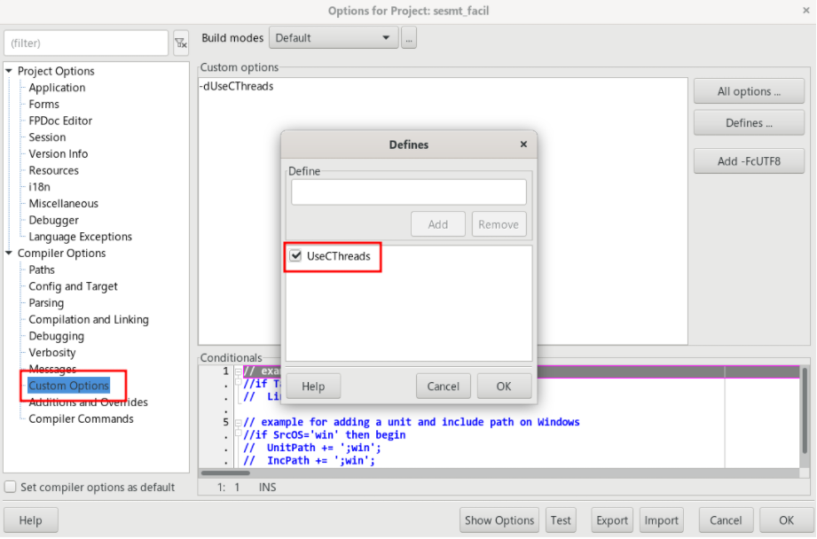

>No Windows não é necessário nenhum ajuste, mas no Linux você precisa ir em Project->Options->Custom Options->Defines e acrescentar o parâmetro UseCThreads:

Se não fizer este ajuste, threads em seu sistema serão barradas e seu programa deixará de funcionar quando uma thread for acionada.